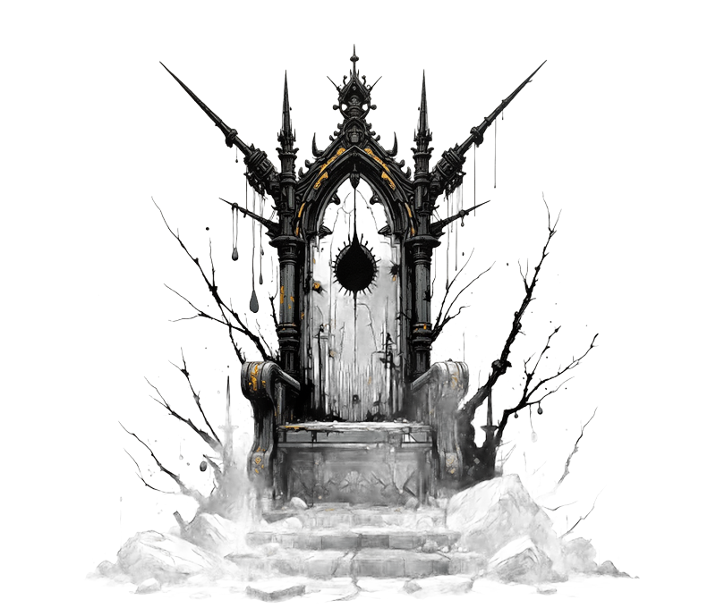
Hollow Throne
Rulebook
Everything has a cost. Hit hard, burn out.
A dark fantasy 1v1 card game. Everything has a cost. Hit hard, burn out.
Hollow Throne is a dark fantasy 1v1 card game. Two players, each commanding a unique hero with their own playstyle and signature power, build their forces and battle to destroy their opponent. Deploy creatures, cast spells, attach equipment, and invoke enchantments that twist the rules of the game in your favor.
Each hero has three core resources: Life Points (LP), their physical resilience; Sanity Points (SP), their mental fortitude and magical reserves; and Essence (E), the primary currency for playing cards — it resets each turn and must be generated, spent, or lost. Exhaust your opponent's body or break their mind — either path leads to victory.
Hollow Throne is a game of dwindling resources. Burned spells are gone forever. Creatures die and leave the cycle. Your deck shrinks over the course of a match, and when it runs out you must reshuffle your discard pile to keep drawing — but each reshuffle costs you LP or SP. The shared Marketplace offers reinforcements, but those cards cost Essence to buy and more Essence to play. This cost — paying LP and/or SP from your own reserves — is called Toll. Toll appears throughout the rules: cycle penalties, end-of-turn discards, emergency Essence generation, and more. Every point of Toll is split however you choose between LP and SP, so every payment is a decision about which resource you can afford to lose.
Each player brings:
You win when your opponent's LP reaches 0 — their forces crushed in battle — or their SP reaches 0 — their will and sanity broken. Win conditions are checked the instant either resource changes, mid-combat or mid-turn. The game ends immediately.
If both players reach 0 simultaneously, the player whose turn it is (the active player) loses.
There is no mulligan. Play with the hand dealt.
There is no strictly required table arrangement, but each zone must be clearly visible to your opponent. A typical setup is shown below.
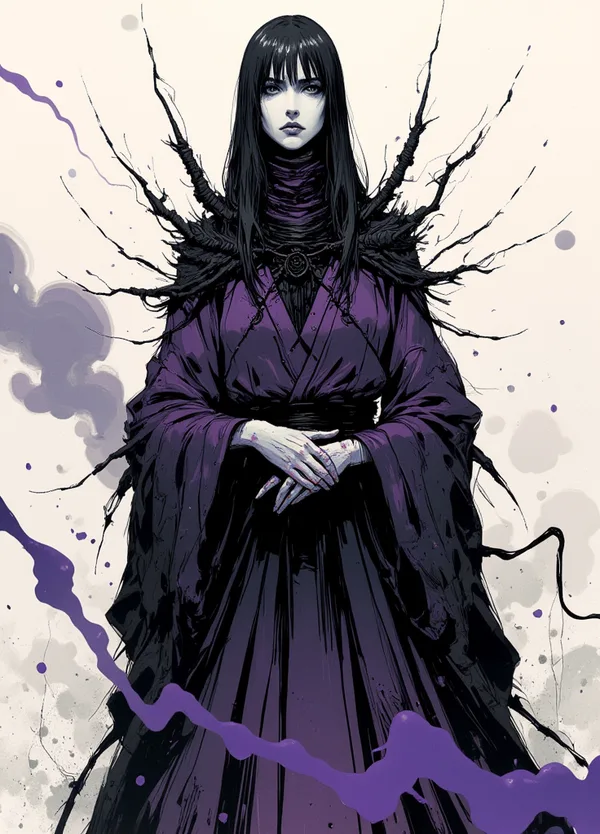
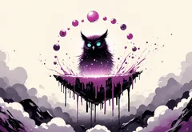
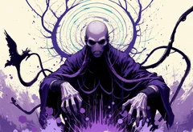
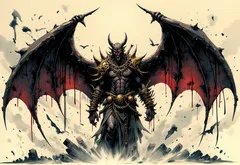
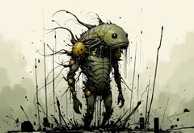
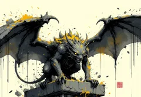
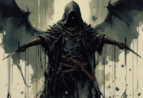
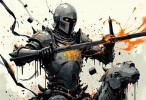
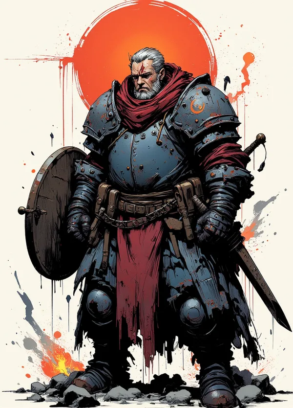
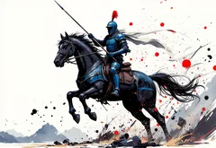
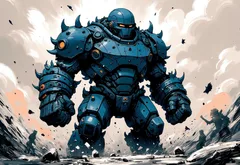
You must resolve all card effects that can be resolved. Some effects have targeting requirements — a valid target must exist for the card to be played at all. Effects that say "you may" are optional; all other effects are mandatory.
Every card in your deck or the marketplace belongs to one of four types. Card type determines where it can be played, how long it stays in play, and what happens to it after use.
Each player has exactly one Hero card, placed face-up at the start of the game. Your Hero defines your starting LP, SP, Essence income per turn, and unique hero power. Your hero stays in play for the entire game — it cannot be destroyed, removed, or returned to hand. Heroes can be targeted by equipment and card effects, and can receive Bleed tokens and damage from combat or abilities.
Permanent cards that occupy your battlefield. Each creature has two stats: ATK (damage dealt in combat) and DEF (how much damage it can absorb before dying). Creatures form your primary offense and defense, and can be sacrificed for resources (see Sacrifice Value below).
Summoning sickness: Creatures cannot attack the turn they enter play — they need time to get their bearings. They can block incoming attacks and use special abilities immediately.
One-time effects that resolve immediately when cast, then move to a zone based on their subtype:
Spells are normally cast during your Main Phase. They can also be cast during Reactive Windows on your opponent's turn — but any spell played reactively is placed in the Removed zone, even if it would normally Cycle. The one exception: spells with the Reaction keyword keep their normal cycle/burn behavior when played reactively. See Reactive Play for the full rules.
Permanent cards that attach to a creature or your hero, granting bonuses or activated abilities for as long as they remain in play. Only one equipment may be attached to each creature or hero at a time — attaching a new one immediately sends the old one to your discard pile. If the equipped creature leaves the battlefield for any reason, the equipment also goes to your discard.
Some equipment have abilities you can trigger by exhausting the equipment itself (rotating it sideways). Only the equipment becomes exhausted when this happens — the creature or hero equipping it is unaffected and remains ready.
Permanent cards that occupy your enchantment zone and reshape the game's rules while in play. Unlike creatures, enchantments don't fight — they alter ongoing conditions: boosting your income, punishing your opponent's actions, empowering your creatures each turn, or enabling powerful synergies across multiple turns.
Some enchantments have upkeep costs paid during your Upkeep Step. If you cannot or choose not to pay, the enchantment is destroyed and sent to your discard pile.
Every card is painted edge to edge. Deck and marketplace cards carry a coloured rail down the left side: the cost at the top, the card's name running down it, and the creature's stats or the spell's fate at the foot. A torn slip at the bottom holds the type line and rules text. The rail's colour tells you whose deck the card belongs to.
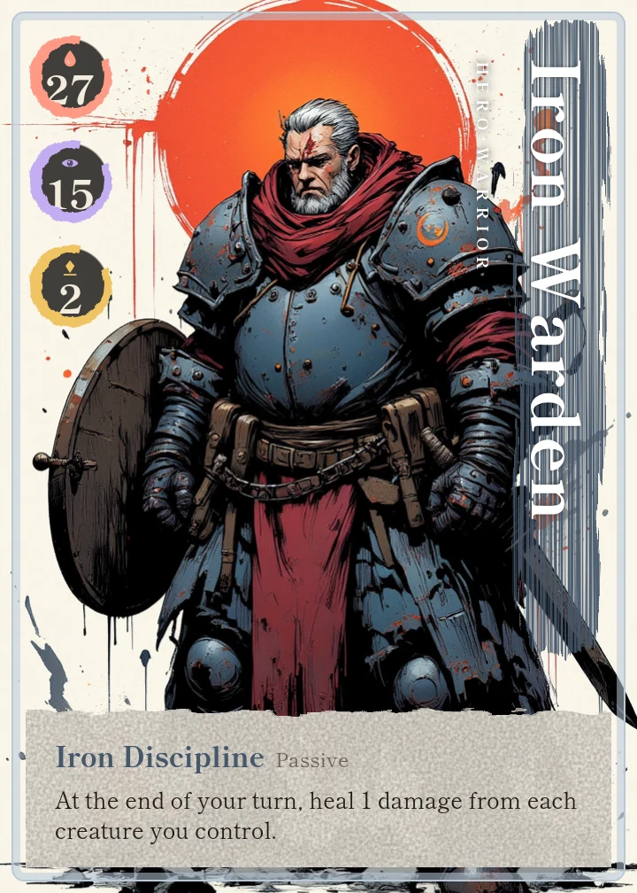
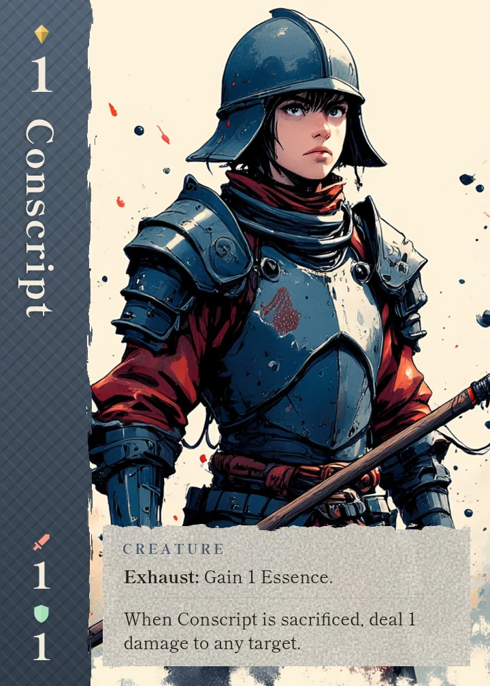
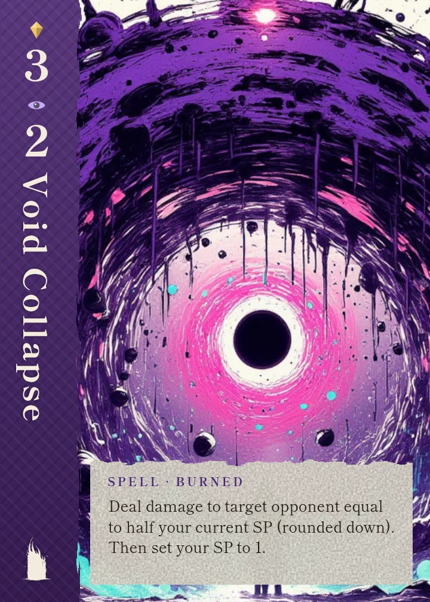
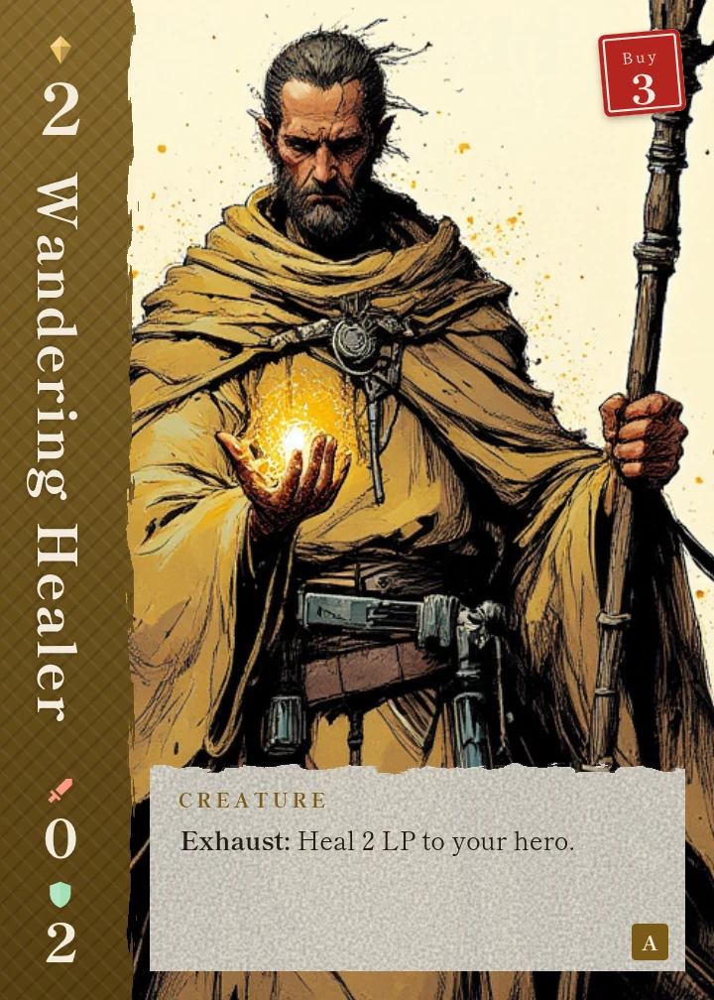
Each area of play has distinct rules for what enters, what can leave, and how cards there interact with effects. The board diagram above shows where each zone sits physically; this section covers the rules for each.
| Zone | Rules |
|---|---|
| Battlefield | Where active permanents live: creatures, enchantments, and attached equipment. Cards here can attack, block, be targeted, and use abilities. |
| Hand | Cards held privately. Maximum 5 at end of turn. You may look at your own hand at any time; your opponent may not. |
| Deck | Your face-down draw pile. When empty and you need to draw, reshuffle your Discard into a new deck and take Toll(2). If both deck and discard are empty, take Draw Damage instead. |
| Discard | Cards discarded from hand (for Essence, voluntarily, or to meet the hand limit), used Cycled spells, destroyed or replaced equipment, and destroyed enchantments. This pile reshuffles into your deck when you need to draw from an empty deck. |
| Graveyard | Dead creatures. Your graveyard is public and can be targeted by resurrection and recursion effects. It does not reshuffle into your deck. |
| Removed | Cards permanently out of the game. Contains: Burned spells after use, non-Reaction spells played during Reactive Windows, Unmade creatures, and cards removed by Devouring. Nothing in this zone can ever be retrieved by any effect. |
| Marketplace | Shared zone between both players. Contains neutral cards available for purchase during the Main Phase. See The Marketplace for full rules. |
Every turn follows the same six phases in order. You cannot skip or rearrange phases, though most phases are quick and automatic:
If your deck is empty when you need to draw, reshuffle your discard pile into a new deck and take Toll(2) (cycle damage). If both your deck and discard are empty, take 1 LP draw damage per missing card instead — this bypasses the cycle entirely and cannot be split into SP.
Take any number of actions in any order:
| Action | Cost |
|---|---|
| Play a card from hand | Pay its Essence and/or SP cost |
| Buy from marketplace | Pay buy cost in Essence (card goes to hand) |
| Sacrifice a creature | Free — choose Offering (Essence) or Consume (SP) |
| Discard for Essence | Discard 1 card from hand, gain 1 non-income Essence (no limit per turn) |
| Toll for Essence | Toll(1) to gain 1 Essence — no limit, available at any time including Reactive Windows |
| Use hero power | Pay cost (if any) |
| Activate an ability | Follow card text |
| Declare combat | Once per turn (see Combat below) |
| Pass | End your main phase |
You may take actions before AND after combat.
Combat may occur once per turn, during your Main Phase. You choose when to initiate it, and you may take other actions before and after.
Choose any number of your ready creatures that are not affected by summoning sickness to attack. Each attacker becomes exhausted when declared — they commit to the attack regardless of what follows.
Attack triggers resolve now (keywords like Horrify, on-attack abilities, etc.). Your opponent then has a Reactive Window before blockers are assigned.
The defending player assigns ready creatures as blockers. Each blocker blocks exactly one attacker; multiple creatures cannot gang up on a single attacker. Any attacker left unblocked deals its damage directly to the defending hero's LP.
Restrictions:
All combat damage resolves simultaneously — there is no priority order within a single combat.
The game doesn't pause during your opponent's turn — you can act. Either player may cast spells during two designated Reactive Windows on the active player's turn:
The reacting player must signal intent before the action resolves — say "I respond" and declare the spell. If no response is declared, the action resolves without interruption.
You have no Essence income on your opponent's turn, so resources must come from what you've prepared or what you're willing to sacrifice:
You may sacrifice any creature you control during your Main Phase or during a Reactive Window. Choose one:
Sacrifice Value (SV) is derived from the creature's casting cost: SV = total cost − 1, with a minimum of 1. Total cost includes both Essence and SP. SV is not printed on the card — compute it from the cost shown in the upper-right corner.
Any triggered abilities on the sacrificed creature resolve first (e.g., "When this creature dies, deal 1 damage"). The creature then moves to your graveyard.
| Keyword | Effect |
|---|---|
| Bleed | When this creature deals combat damage, place a Bleed token on the damaged target. At the start of that target's controller's next turn, the target loses 1 DEF (or 1 LP if a hero) per Bleed token, then all Bleed tokens are removed. Bleed is not damage — it cannot be prevented or reduced by Shield or other damage prevention effects. Card effects may also place Bleed tokens directly, independent of combat. |
| Devouring | When this creature deals combat damage to a player, prevent that damage. Instead, remove the top card of that player's deck from the game (Removed zone). |
| Eldritch | When this creature enters play, opponent loses 2 SP. |
| Flying | Can only be blocked by creatures with Flying or Reach. |
| Horrify | When this creature attacks, the defending player loses 1 SP. |
| Mill(N) | Move the top N cards of target player's deck to their Discard pile. If the deck is empty, the effect does nothing for missing cards — the player is not forced to cycle. |
| Reach | Can block Flying creatures. |
| Reaction | This spell follows its normal cycle/burn behavior when played during a Reactive Window, instead of being permanently removed. |
| Scry(N) | Look at the top N cards of target deck. They remain on top in their original order. Cards that Scry may add further effects — draw, mill, or remove — as specified in their text. |
| Shield | Reduce damage from each source by 1. |
| Toll(N) | Lose N total from your LP and/or SP, divided however you choose. Each point is assigned individually (e.g., Toll(2) = 2 LP, 2 SP, or 1 LP + 1 SP). |
| Unique | Only one copy can be in play at a time (per player). |
| Vampiric | When this creature deals combat damage, its controller heals that much LP. |
The Marketplace is a shared zone of neutral cards accessible to both players. It offers mercenaries, spells, and equipment that no hero deck contains — a common resource that both players compete to control and exploit.
Buying: During your Main Phase, pay a card's buy cost in Essence to acquire it. The card goes directly to your hand and can be played that same turn if you have the resources to do so.
Stock: The marketplace contains 2 copies of each card type. Once both copies of a card have been purchased, that card is no longer available. Act early if you want something before your opponent takes it.
Draft (setup): See Setup step 3. Each match uses a freshly drafted marketplace, so available cards vary game to game.
Every hero carries a unique power that defines part of their playstyle. Powers come in two forms:
| Hero | Power | Type | Effect |
|---|---|---|---|
| Bone Tyrant | Grave Touch | Exhaust (2SP, once/turn) | Return target creature from your graveyard to your hand. You may cast it for 1 less Essence this turn. |
| Crimson Ranger | Marked Prey | Exhaust (free, once/turn) | Deal 1 damage to target creature. |
| Iron Warden | Iron Discipline | Passive | At end of turn, heal 1 damage from each creature you control. |
| Thread-Cutter | Fate's Glimpse | Exhaust (free + optional 1SP) | Scry(1) target player's deck. You may then spend 1 SP to choose whether the card is drawn by its owner or Milled. |
| Void Scholar | Arcane Conversion | Exhaust (1SP, once/turn) | Gain 2 Essence. |
Essence is volatile — generating more than you spend has consequences. At the end of every turn, both players check for unspent non-income Essence. Each unspent point from non-income sources — sacrifice (Offering), discard-for-Essence, Toll-for-Essence, exhaust abilities, and hero powers — costs Toll(1) per point to that player.
Essence from your Income Step (hero base income plus any permanent bonuses) is exempt. You are never penalized for leaving income unspent.
Spending order: Income Essence is always spent first. If you hold 3 income Essence and 3 generated Essence and spend only 3 total, the income is consumed — the 3 generated Essence remains unspent and triggers Feedback. You cannot choose to spend generated Essence first to avoid the penalty.
Feedback applies to both players, not just the active player. If you generate Essence — for example, via Offering — during a Reactive Window on your opponent's turn and leave it unspent, it triggers Feedback at the end of their turn. Every resource you actively generate must be used, or it costs you.
Some card effects Unmake a creature rather than destroy it. An Unmade creature goes to the Removed zone permanently — not the Graveyard. The creature has not died: no death triggers fire, no sacrifice triggers fire, and no leave-play effects resolve. It cannot be returned by any recursion effect (Grave Touch, Mass Reanimate, Blood Bond, or anything similar). Only card text that explicitly says "Unmake" causes this. Normal destruction always sends creatures to the Graveyard.
Exception: Cards whose trigger text explicitly names Unmake — such as Bone Tithe ("dies or is Unmade") — do fire when a creature is Unmade, because the card itself opts in. This is not a death trigger. Only cards that say "Unmade" in their text acknowledge an Unmake event.
Damage persists on creatures between turns. A creature with 3 DEF that takes 2 damage has 1 effective DEF remaining. It stays wounded until healed or it dies. There is no end-of-turn damage reset. A creature reduced to 0 or fewer DEF dies regardless of the source — combat damage, card effects, Bleed, or any other cause.
LP and SP cannot exceed their hero's starting values. Any healing or recovery that would push a resource above its starting value is simply lost — the excess is wasted. This applies to all sources: Vampiric combat damage, Consume, card effects, and hero powers.
Every time you reshuffle your discard pile into a new deck, take Toll(2). Burned spells and dead creatures thin your deck permanently, shortening the time between reshuffles — and the pain they bring.
Every card discarded during the End Phase costs Toll(1), whether the discard is voluntary or forced by the hand limit. Discards caused by card or creature effects during other phases are free.
If you must draw but have no deck and no discard pile to reshuffle, take 1 LP per missing card. This is direct LP damage — not a Toll, and not split between LP and SP.
Only one equipment may be attached to each creature or hero at a time. Attaching a new equipment immediately sends the old one to your discard pile. When you exhaust an equipment to activate its ability, only the equipment becomes exhausted — the creature or hero it is attached to remains ready and unaffected.
Turn order: Ready → Draw → Income → Upkeep → Main (with optional combat) → End
Essence: Resets to 0 each Income Step. Sources: hero base income, permanents in play, exhausting creatures, discarding cards (1 Essence each), sacrificing (Offering), hero powers, stored tokens (Temporal Cache / Spell Vault / Bone Tithe), or Toll(1) (pay 1 LP or SP to gain 1 Essence — any time). Unspent non-income Essence at end of turn: Toll(1) per point, both players (Feedback).
SP: Spent on spells, enchantments, and some hero powers. Does not recover naturally. Regain via Consume (sacrifice a creature for SP equal to its SV) or specific card effects.
Hand limit: 5 cards at end of turn. You draw to 5 + 1 bonus card each turn. Every End Phase discard — voluntary or forced: Toll(1) per card.
Reactive Windows: You may cast one spell in response to your opponent declaring attackers (Attack Window) or casting a spell (Spell Window). The reactive spell resolves immediately — no chains. Counterspells cancel the triggering spell entirely. Reactive spells are placed in the Removed zone unless they carry the Reaction keyword.
Unmade: Unmade creatures go to the Removed zone, not the Graveyard. No death triggers fire. Cannot be recursed by any effect.
LP/SP cap: Neither resource can exceed its hero's starting value. Excess healing or recovery is simply lost.
Victory: Your opponent's LP or SP reaches 0. Checked instantly whenever either resource changes.
Card-specific rulings that extend or clarify printed card text. The rules below apply only to the named card and override the general rules where they conflict.
Spell Vault allows cards stored under it to be played at any time on any player's turn — broader than the two standard Reactive Windows.